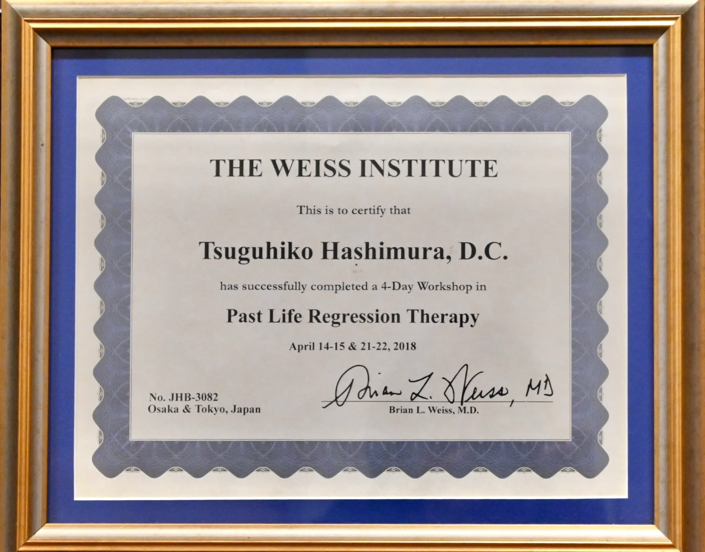
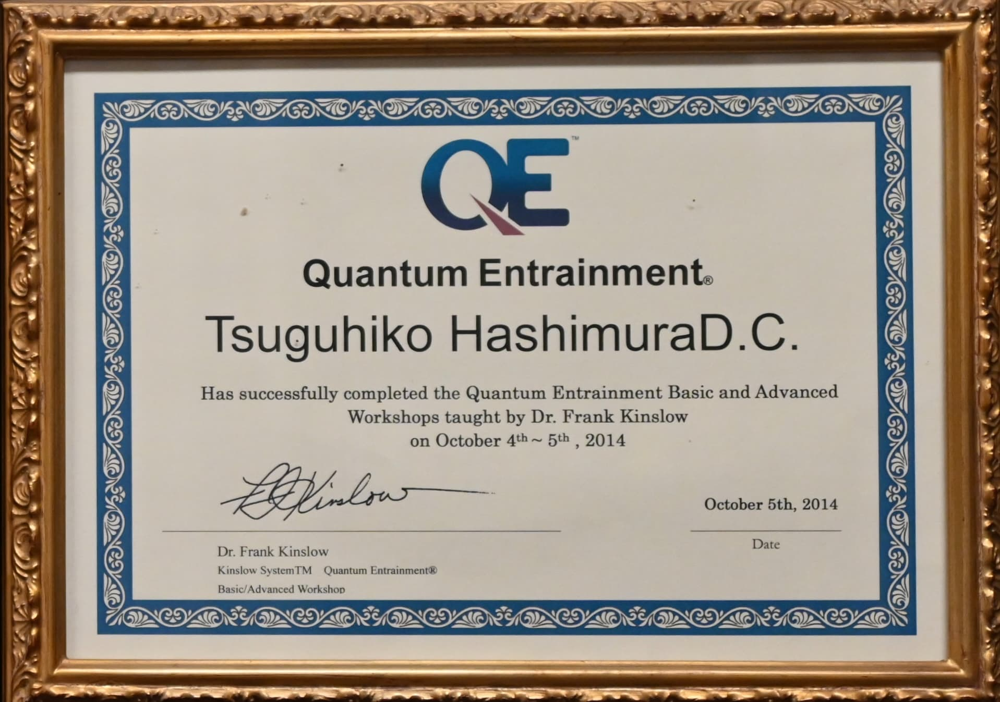
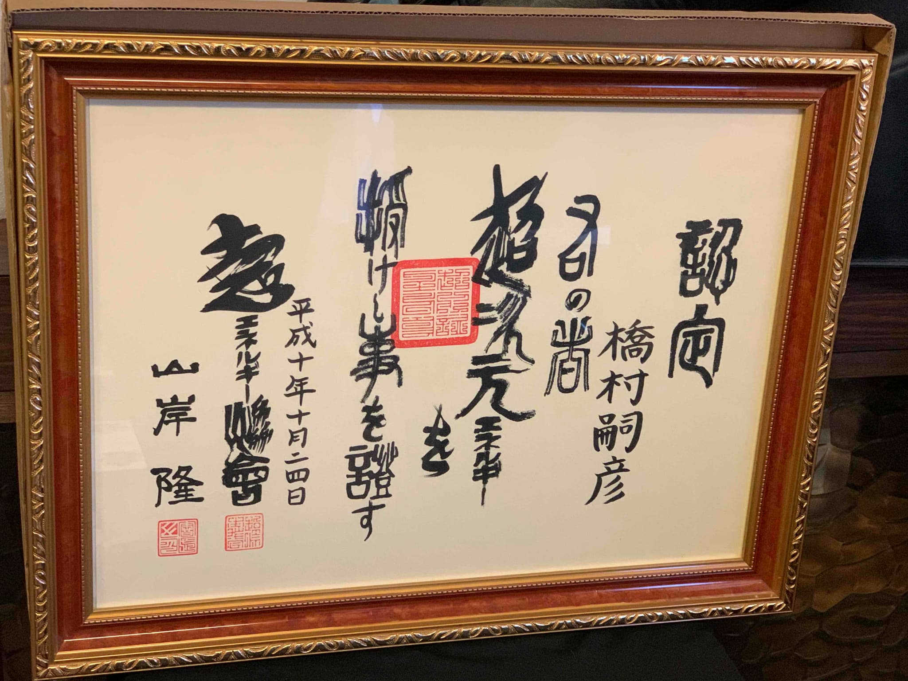
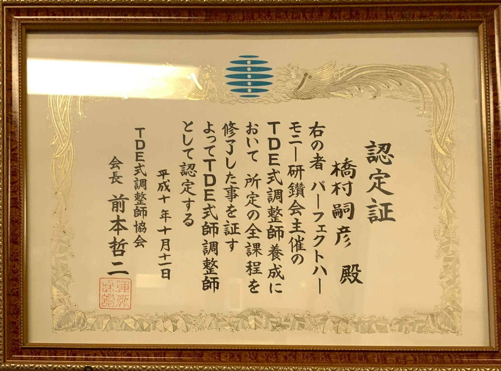

ポリシー
「常に真実を探求せよ」
所長挨拶
所長:橋村 嗣彦
Hashimura Tsuguhiko
インターネット、SNSの普及により虚構と現実が入り乱れた現代。
知りたい情報に容易にアクセスできるようになった反面、知りえた情報の
真偽が曖昧なまま「にわか物知り」に陥る人が散見される気がします。
古来から日本には「見えないもの」を尊ぶ畏敬の精神がありました。
その半面、情報社会の時流に流され、普遍的な何かを
犠牲にしていませんか…？
清濁入り乱れる情報過多な現代だからこそ、かのソクラテスが
解いた「無知の知」の姿勢が重要ではないでしょうか。
情報は無限、貴方の時間は有限です。
「目に見えない世界へようこそ」
「さらに奥へ」
脊柱と霊性
七つのチャクラと七つのエネルギー。
２つが整う事で宇宙は貴方を中心に動き出す。
人間の体はエネルギーに溢れている。
その起点は人間の体内にある七つの「チャクラ」であり、
自律神経や感情、内分泌系に深く関係している。
チャクラから発せられるエネルギーは、人間の肉体を
まとう七つのエネルギー（スピリチュアル体、メンタル体、
アストラル体、エーテル体等）と相互に作用する。
主な対応ケース
-
【浄化・浄霊】
人間関係、土地、物 -
【エナジー療法】
心身ともに -
【心の問題解消】
-
【相性診断】
異性、土地、仕事、物 -
【パラレルワールドトリップ】
分身法や意識拡大法 -
【愛情問題】
愛情に関わる問題の解決 -
【過去世療法】
チェックと浄化 -
【進学問題】
課題の明確化と合格率チェック
資格
-
 前世療法の権威:ブライアンワイズ博士
の過去世回帰セミナー修了証 -
 悟りの探求と量子物理学の融合
クォンタムエントレイメント修了証 -
 目に見えない未知のエネルギー
「TDE」エナジー証 -
 未知のエネルギーで心身の
回復を図る「TDE」調整師証
-
チャクラと丹田の活性化
-
ミトコンドリア・ソマチッド・
腸内フローラの活性化 -
自然治癒力の向上
-
「愛情」に関する課題の
発見と改善 -
神性、魔性の見極め
-
悪影響をもたらす並行世界の
貴方との関係改善 -
本当の自分を発見する
-
身体をコントロールする
”アルケミスト”の活性化
基本情報
営業時間
9:00～18:30
休業日
日曜・祝日
料金
5000円より～
施術時間
症状により20分～1時間
アクセス
福岡県福岡市早良区南庄1-11-5